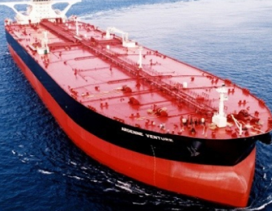
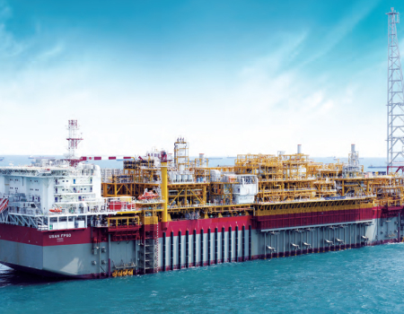
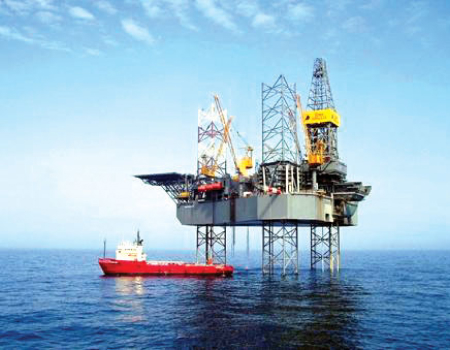

조선 해양
business
조선사업
고기술·고부가가치선 시장을 선도하고 있습니다.
-
- LNG선
- LNG선은 영하 163도로 액화천연가스를 운반하는 선박입니다. 기존 대비 성능과 연비가 뛰어난 전기추진 LNG선, 2013년 이후에는 연비를 개선한 친환경 고효율 엔진 LNG선을 성공적으로 건조해 앞선 기술력을 선보였습니다.
-

- 유조선
- 원유를 운송하는 원유운반선, 정제과정을 거친 석유제품을 운송하는 정유운반선, 그리고 FPSO 등 해양생산설비에서 생산한 원유를 육상기지로 운송하는 셔틀 탱커가 있습니다.
-
- 컨테이너선
- 세계 최초로 6200TEU급 컨테이너선을 개발한 이래,8100TEU급,9600TEU급,13300TEU급,16000TEU급 선박을 세계 최초로 개발하며 컨테이너선의 대형화를 선도하고 있습니다.
-
- 쇄빙 유조선
- 세계 최초로 7만톤급 극지운항용 전·후진 양방향 쇄빙유조선를 건조하였고 선박의 최대 두께 1.4m의 얼음을 깨고 시속 3.5노트의 속도로 항해할 수 있으며, 영하 45도의 혹한에서도견딜 수 있도록 설계됐습니다.
-
- 에탄운반선
- 셰일가스 등 천연가스에서 추출되는 에탄을 액화하여 운반하는 선박입니다. 세계 최초로 87만 입방미터급 에탄운반선을 수주해 신시장 개척에 성공했습니다. 에탄운반선은 운항성능이 높고 친환경적인 고부가 가치 선박입니다.
-
- 여객선
- 그리스 미노안, 네덜란드 노포크, 스웨덴 스테나 등으로부터 총 9척의 여객선을 수주하면서 크루즈선 사업 진출 기반을 착실히 다졌습니다. 친환경 여객선을 개발하는 등 친환경 기술연구에도 앞장서고 있습니다.
해양사업
탄탄한 기술력과 축적된 경험으로 새로운 가치창조
-
- FLNG
- 해상에서 천연가스를 채굴한 뒤 정제하고 LNG로 액화해 저장ㆍ하역할 수 있는 해양플랜트 설비입니다. 해저파이프를 설치하지 않기 때문에 해저 생태계도 보호할 수 있다는 장점이 있습니다
-
- FPSO
- 부유식 원유생산저장하역설비로서 심해 유전이나 조기 개발, 유전 개발에 활용되는 고가의 해양설비입니다. 과학적인 검증을 통한 고도의 신뢰성과 안전성이 필요한 해양설비입니다.
-
- 부유식 해양구조물
- 심해 해상에 설치돼 해저 유전의 시추와 생산 작업에 투입되는 설비입니다. 삼성중공업은 세계 최초 FLNG 개발에 이어 세계 최대 규모의 CPF 수주로 해양구조물의 역사를 새로이 쓰고 있습니다.
-

- 고정식 해양플랫폼
- 수심이 비교적 얕은 해상에 고정하여 설치되는 해양자원개발설비입니다. 고정식 해양플랫폼에는 콘크리트 중력식 구조물, 자켓 구조물, 가이드 타워, 갑판승강형 등 여러 종류가 있습니다.
-
- 드릴쉽
- 심해지역이나 파도가 심한 해상에서 원유를 발굴하는 시추설비로 고도의 선박건조기술과 해저시추 기술이 필요한 고부가가치선입니다. 극지방에서 시추작업을 수행할 수 있는 세계 최초의 극지용 드릴십입니다.
-

- 잭업리그
- 대륙붕 유전 개발에 투입되는 시추 설비입니다. 잭업리그는 잭업레그를 바다 밑으로 내려 해저면에 고정하고, 선체를 해수면 위로 띄워 작업함으로써 파도와 조류의 영향을 받지 않는 장점이 있습니다.